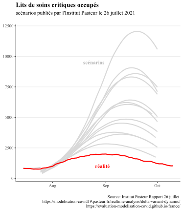
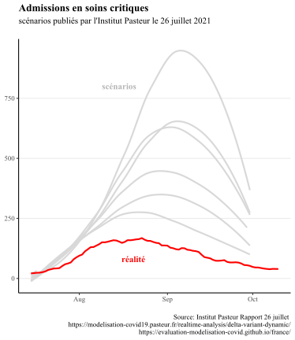
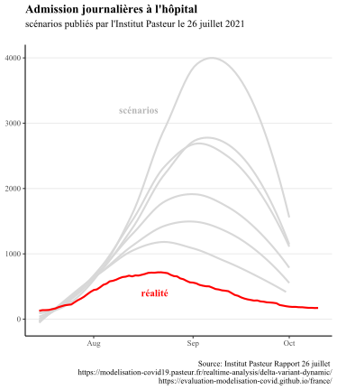

Notre démarche
Ce site vise à proposer une rétrospective sur les principaux scénarios de modélisation utilisés pour guider les décisions majeures prises depuis deux ans (par exemple confinements, couvre-feu, ou encore mise en place du pass sanitaire). Une description détaillée des scénarios de modélisations est accessible sur la page Accueil. Une explication de l’importance de l’évaluation des scénarios de modélisation est accessible sur la page Impact.
Pourquoi évaluer les scénarios de modélisation est-il important?
Les scénarios de modélisation jouent un rôle primordial dans les politiques publiques mises en place depuis le début de la pandémie de covid-19. Par conséquent, pour pouvoir prendre de bonnes décisions, il est important d’avoir des scénarios de modélisation qui permettent de bien anticiper la réalité.
Par exemple, ce sont des scénarios de modélisation qui ont conduit beaucoup de gouvernement à ne pas se limiter aux mesures traditionnelles de lutte contre les épidémies pour aller vers un confinement strict. En effet, le rapport de l’OMS de préparation aux pandémies de 2019 ne recommandait sous aucune circonstance la fermeture des frontières, le contact tracing ou la quarantaine des cas contact durant la phase pandémique (et a fortiori encore moins un confinement généralisé).
Ainsi, dans son rapport du 12 mars 2020, le Conseil Scientifique a affirmé que les mesures classiques utilisées pour limiter la propagation des épidémies ne permettraient pas de limiter suffisamment la circulation du virus, impliquant la nécessité d’un confinement strict (“on ne s’attend pas à ce que la réduction de la taille du pic épidémique soit suffisante pour éviter une saturation du système de santé. (…) Cette intuition a été illustrée à travers la réalisation d’un modèle COVID19 particulier (Neil Ferguson, communication personnelle).”), en se basant sur le modèle dont les résultats sont présentés ci-dessous.

Les scénarios du modèle sont représentés par les barres grises, représentant 2 extrêmes : un confinement stric tel que suivi par les autres pays européens, et aucune mesure. L’approche suivie par la Suède est intérmédiaire, quelque part entre les deux.
On voit que les scénarios ont largement surestimé la taille du pic hospitalier : même le scénario optimiste avec un confinement strict surestime ce pic par un facteur 2, alors même que la Suède n’a pas confiné sa population.
Cet exemple illustre l’importance que peuvent avoir les scénarios de modélisation, par exemple en décidant un gouvernement à mettre en place un confinement strict.
Peut-on vraiment les évaluer?
Un argument souvent entendu au sujet des scénarios de modélisation est le suivant: comme le scénario permet d’anticiper le pire, il mène à prendre des mesures qui vont justement empêcher que le scénario modélisé se produisent, ce qui explique le décalage entre le scénario de modélisation et la réalité (où des mesures de freinage ont été prises!). Effectivement, il n’est pas possible d’établir une comparaison dans ce cas de figure.

Cependant, les scénarios de modélisation intègrent souvent plusieurs hypothèses sur les mesures de freinage qui pourraient être mises en place. Ici, nous ne comparerons la réalité qu’avec des scénarios où les mesures de freinage mises en place avaient aussi été modélisées.

Ainsi, la comparaison entre scénarios de modélisation et réalité permettra bien d’évaluer si ceux-ci ont bien anticipé la réalité.
Par exemple, lors de la 4ème vague, l’Institut Pasteur avait d’abord publié un rapport le 9 juillet. Après l’annonce de l’extension du pass sanitaire annoncée mi-juillet, l’Institut Pasteur a publié un nouveau rapport intégrant l’effet de cette mesure. Comparer les modélisations du rapport du 9 juillet avec la réalité n’est pas légitime, mais comparer les prévisions du rapport suivant avec la réalité oui (car l’impact des mesures y a déja été modélisé).
Lits de réanimation

Entrées en réanimation

Nouvelles hospitalisations

Ces scénarios comparent les prévisions faites pour le mois d’août 2021 avec l’évolution réelle durant les mois d’août: comme les scénarios intègrent les mesures mises en place, la comparaison est possible.
Est-ce vraiment grave si les modélisations ne concordent pas avec la réalité?
On peut penser qu’il vaut mieux surestimer la réalité et “prévoir systématiquement le pire”, et donc mener les politiques à réagir avec un surplus de mesures pour limiter la propagation de l’épidémie. En réalité, la plupart des mesures de freinage de l’épidémie (confinement, couvre-feu, fermeture de classes, fermetures de lieux publics) ont des impacts sanitaires, sociaux et économiques négatifs. Par conséquent, surréagir face à l’épidémie n’est pas une bonne chose (de même que ne pas réagir assez).

Des modélisations trop pessimistes peuvent ainsi conduire à maintenir en place des mesures restrictives qui ne seraient pas nécessaires. Par exemple, lorsque le gouvernement britannique a décidé de lever la plupart de ses mesures de restrictions (telles que limitations de capacité dans les lieux accueillant du public, port du masque obligatoire ou encore limitations de déplacement) le 19 juillet 2021, sans non plus mettre en place un “pass sanitaire” pour accéder à des évenements ou lieux publics, cette initiative a été décriée par des scientifiques comme “dangereuse et prématurée”. Cette thèse de l’ouverture “dangereuse et prématurée” était supportée par les modélisations du conseil scientifique Britannique (SAGE), représentées ci-dessous.

Ces modélisations étaient largement pessimistes, et ont donc surestimée la nécessité de maintenir en place des mesures restrictives. Des modélisations non alignées avec la réalité ont donc failli empêcher un retour à une vie presque normale pour les Britanniques.
Une description plus détaillée des scénarios de modélisation est accessible sur la page Modélisations.